Exercises on numpy array¶
Squared numbers¶
Create a list (using a loop) and an array (without loop) containing the square of integer number from 0 to N-1. Compare execution speed with 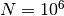.
Calculation of pi¶
Without any loop, calculates  using the formula :
using the formula :
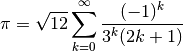
Take care of the integer division in the 2.7 version of Python.
Allan variance¶
The allan variance of a set of measurements 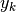, where each point corresponds to a frequency measured during  is defined as :
is defined as :
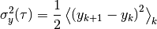
- Write a function that calculates the Allan variance without any loop
Using a data set where the duration of each measurement is 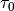, it is possible to calculate the Allan variance for duration 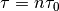 that are mutiple of . In this case, the new value is calculated by taking the average value of  consecutive measurements. There is no overlap between the values (there is times less points compared to the initial set).
consecutive measurements. There is no overlap between the values (there is times less points compared to the initial set).
- Write a function
average_frequency(data, n)that calculate the mean value ofdatawith packets of sizen.
It is possible to make this function without any loop. Let us start with an array of size 10 and take 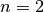. The shape of the array is initially:
+--+--+--+--+--+--+--+--+--+--+
|x0|x1|x2|x3|x4|x5|x6|x7|x8|x9|
+--+--+--+--+--+--+--+--+--+--+
Using the rechape method (x.reshape((5,2))), the array will look like:
+--+--+
|x0|x1|
+--+--+
|x2|x3|
+--+--+
|x4|x5|
+--+--+
|x6|x7|
+--+--+
|x8|x9|
+--+--+
The method mean(axis=1) will perform the average line by line.
- Write the function
AllanVariance(data, n)that calculate the Allan variance for a measurement duration of .
.
Mandelbrot set¶
The Mandelbrot set is defined as the set of points  of the complex plane such that the following sequence :
of the complex plane such that the following sequence :
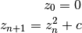
is bounded.
One can show that if there is a value of such that 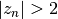 the the sequence is divergent. To calculate the Mandelbrot set, for each value of one calculate 100 iterations. The picture is plotted by giving to each point the smallest value of 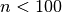 such that (and 0 if this value doesn’t exist).
Calculate and plot the Mandelbrot set for such that 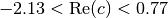 and 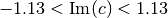. One can then zoom on the edge of the set.
Note : to plot an image, use the imshow function of pylab.
The total computation time using numpy efficiently is less than 10 seconds for a 1024x1024 matrix.
{kind=link}